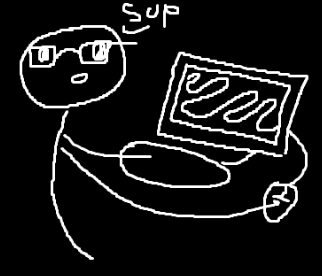

About Me

As a big fan of the Zombies series from all the Call of Duty Black Ops, i wanted to create a Prototype of a
Website that contains multiple guides and additional info for all the zombies maps for Black Ops 6.
This a the same time, helps me to learn multiple tecnologies that i still haven't learn yet in my
Computing Enginnering career, since i have always worked in the creation of software, not Web Development.
I hope this project still manages to continue, since it's kinda of a hobbie for me and i like working in it :)